Shape Prediction from Numeric Predictors
Mark A. Conaway
Introduction
Given one or more potential linear predictors, it is an extremely
useful tool in geometric morphometrics to be able to visualize the
effect that a predictor has on the shape of a specimen. The
shape.predictor function in geomorph allows the user to do
this using linear predictors such as PC scores,
allometric relationships, or partial least squares
regression.
shape.predictor()
- \(A\): A 3D array (p x k x n) containing Procrustes-aligned shape variables.
- \(x\): A vector or matrix (or a list containing either of these) of linear (numeric) predictors. See tutorials on Ordination methods for instructions on how to generate these.
- \(Intercept\): Logical value (TRUE or FALSE) to indicate whether an intercept should be used in the linear equation for predictions. Generally, this value will be FALSE for shape predictions made in ordination plots. It should be TRUE in cases where the expected shape at the point the predictor has a value of 0 is not the mean shape.
- \(method\): A choice between least
squares (LS) or partial least squares (PLS) regression for prediction.
The function defaults to LS prediction. PLS might be chosen in cases
where correlation is preferred over linear regression. If PLS is chosen,
a two-block PLS analysis using
two.b.plsshould be performed first, as only the first singular vector for predictors will be used for defining prediction criteria (see below).
Numeric Predictors
1: Shape Prediction Using PC scores
To predict shape changes based on PC scores, one must have results of
a PCA using the gm.prcomp function. For the
purposes of this example, we will assume the reader has done this
already. The next step is to extract the predictors (PCs) for use in the
function:
PC <- PCA$x[,1]
PC## 1 2 3 4 5 6 7
## -0.0369930887 -0.0007493689 0.0056004751 -0.0134808326 -0.0334696064 -0.0052144953 -0.0030000192
## 8 9 10 11 12 13 14
## -0.0132974364 -0.0309852193 -0.0219654094 -0.0568125309 -0.0685392442 -0.0628850421 -0.0913269966
## 15 16 17 18 19 20 21
## -0.0623752317 -0.0495302423 -0.0404228370 -0.0499361411 -0.0691803602 -0.0475317885 0.0401310138
## 22 23 24 25 26 27 28
## 0.0517139033 0.0330882584 0.0433375155 0.0355450979 0.0215592389 0.0497210635 0.0286722364
## 29 30 31 32 33 34 35
## 0.0513588907 0.0338626707 0.0553310849 0.0322009051 0.0378707876 0.0373195281 0.0369264346
## 36 37 38 39 40
## 0.0348882260 0.0464477550 0.0340835994 0.0134507319 0.0345864739This returns the 40 PCs for the first specimen in our dataset. This could be expanded to multiple specimens within (apparent) groups. Now we put them to use in the function:
preds <- shape.predictor(lmks$coords, x= PC, Intercept = FALSE,
pred1 = min(PC), pred2 = max(PC))This returns an object that includes coordinates that have been estimated for a specimen resembling the highest and lowest PCs in our data set. We can visualize them using plotReftoTarget:
plotRefToTarget(lmks$consensus, preds$pred1)
plotRefToTarget(lmks$consensus, preds$pred2)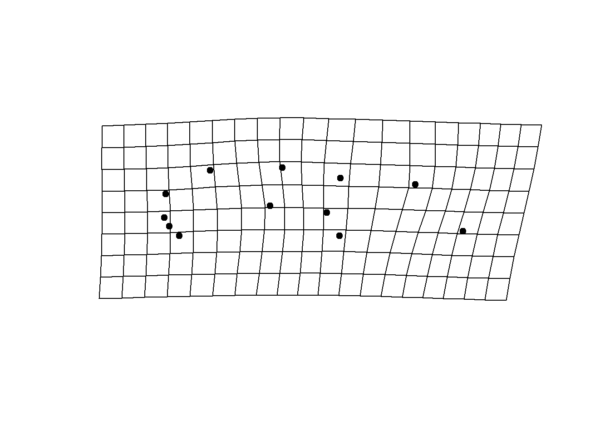
2: Shape Prediction Using Allometric Relationship
Allometric relationships can also be used as predictors for this function, and can be implemented in several ways. The first is simply using log centroid sizes of our dataset:
preds <- shape.predictor(lmks$coords, x= log(lmks$Csize),
Intercept = TRUE,
predmin = min(log(lmks$Csize)),
predmax = max(log(lmks$Csize))) plotRefToTarget(lmks$consensus, preds$predmin, mag=3)
plotRefToTarget(lmks$consensus, preds$predmax, mag=3) 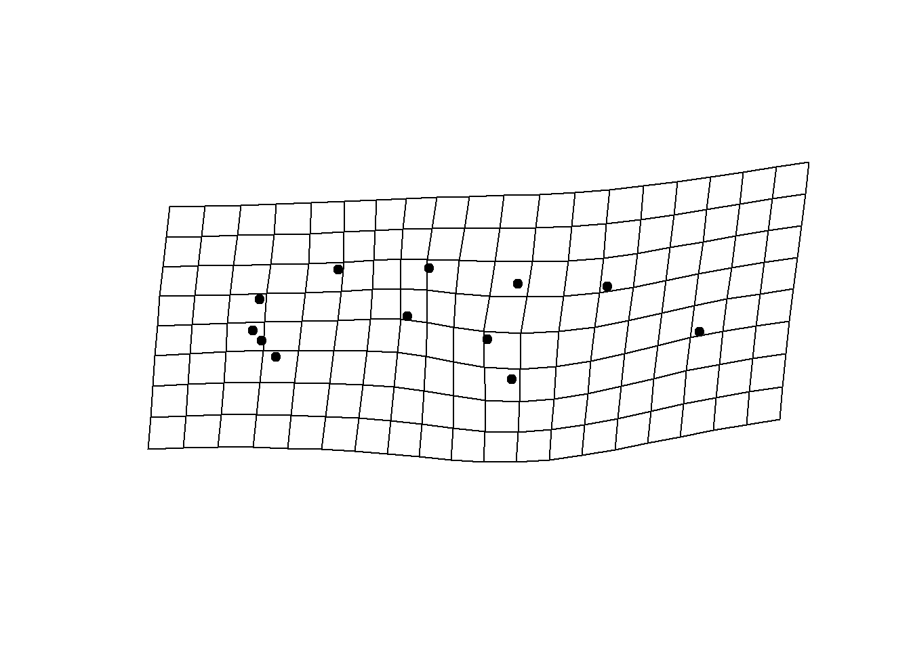
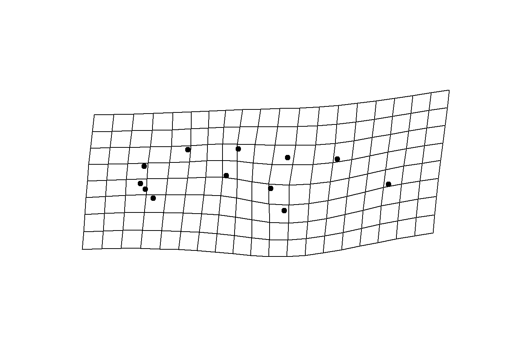
Alternatively, implementing allometric relationships as predictors
can be done using the RegScore or PredLine methods from
procD.lm. We illustrate an example below, but see the
tutorial on plotting allometry for more details on these
methods.
First, we generate our fit:
gdf <- geomorph.data.frame(lmks)
plethAllometry <- procD.lm(coords ~ log(Csize), data=gdf)Then implement the function and visualize using
plotRefToTarget
allom.plot <- plot(plethAllometry, type = "regression", predictor = log(gdf$Csize),
reg.type ="RegScore")
preds <- shape.predictor(plethAllometry$GM$fitted,
x= allom.plot$RegScore, Intercept = FALSE,
predmin = min(allom.plot$RegScore),
predmax = max(allom.plot$RegScore))
plotRefToTarget(lmks$consensus, preds$predmin, mag=3)
plotRefToTarget(lmks$consensus, preds$predmax, mag=3) 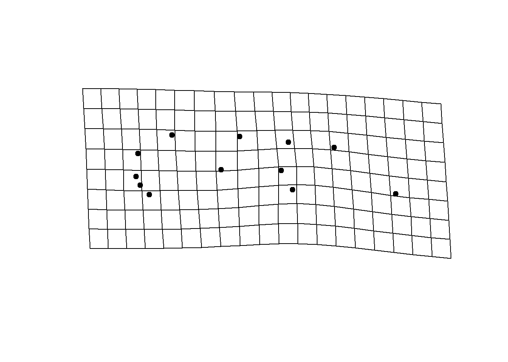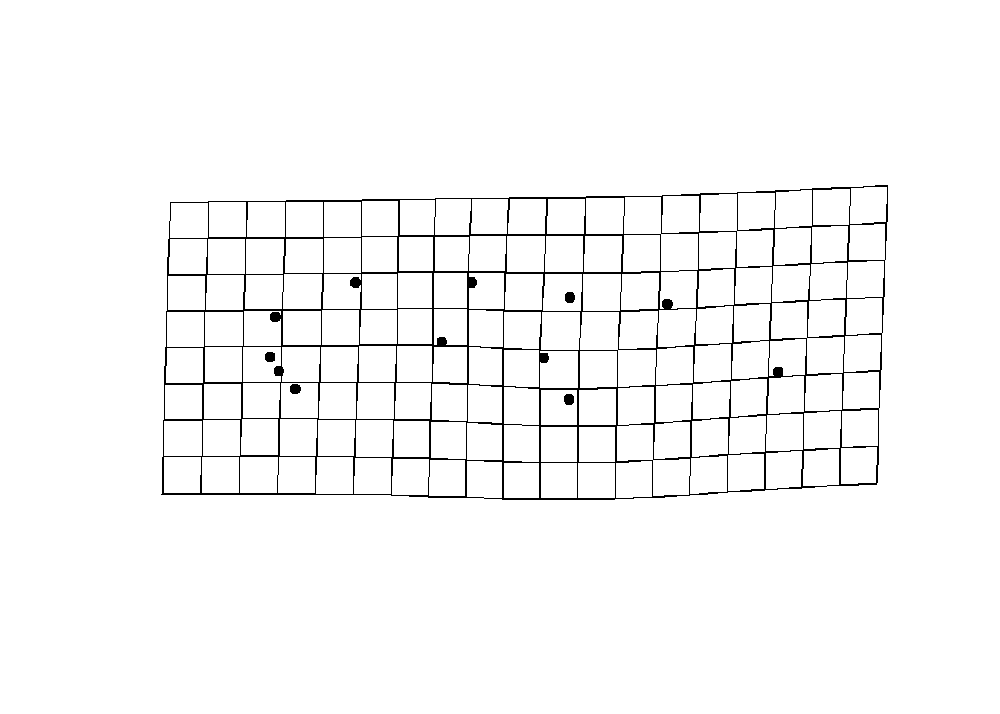
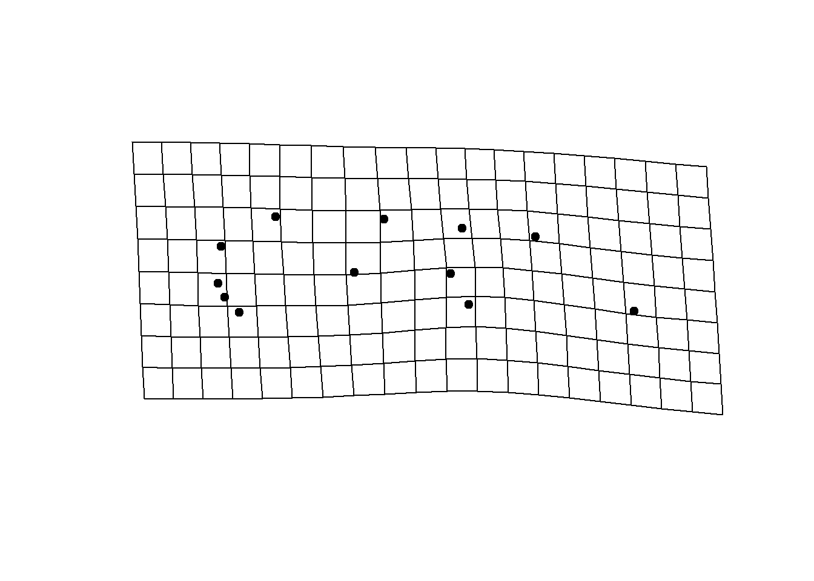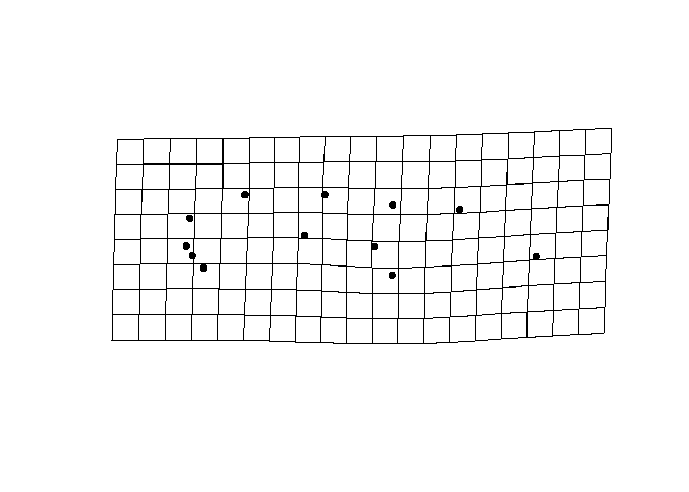
allom.plot <- plot(plethAllometry, type = "regression",predictor = log(gdf$Csize),
reg.type ="PredLine")
preds <- shape.predictor(plethAllometry$GM$fitted,
x= allom.plot$PredLine, Intercept = FALSE,
predmin = min(allom.plot$PredLine),
predmax = max(allom.plot$PredLine))
plotRefToTarget(lmks$consensus, preds$predmin, mag=3)
plotRefToTarget(lmks$consensus, preds$predmax, mag=3) 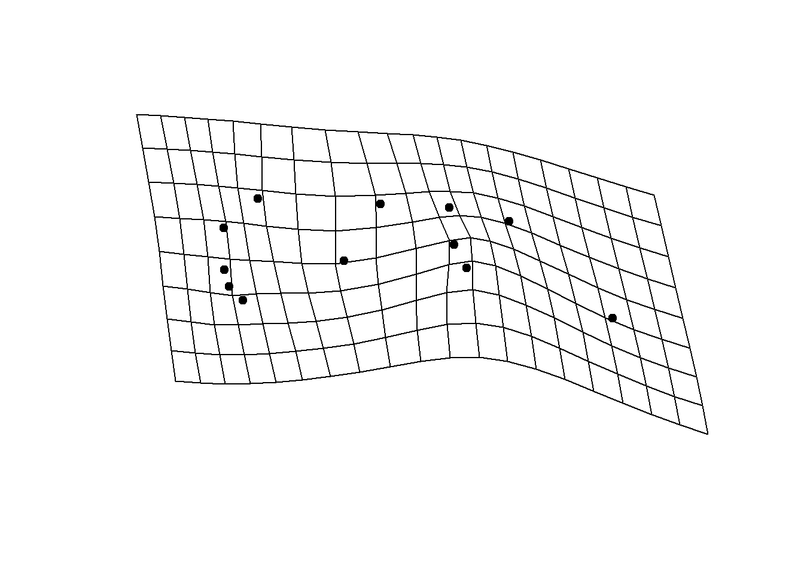
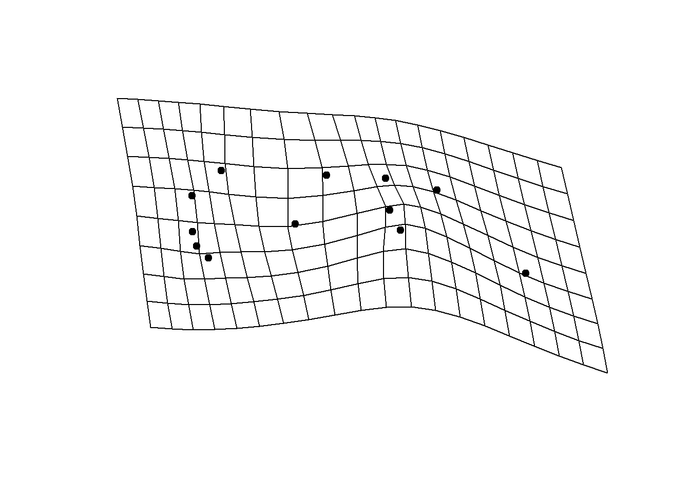
3: Shape Prediction Using Two-block PLS
Finally, results of a two-block PLS can be used as a predictor for this function. Results of the PLS must be input into the function as scalars (single values as opposed to vectors) that are taken from a PLS plot. By way of example, we plot the results of a PLS analysis between plethodontid head shape and food use data. Please see the tutorial on PLS for details how to generate these results:
PLS <-two.b.pls(A1 = plethShapeFood$food, A2 = plethfood$coords, iter=999, print.progress = F)
plot(PLS)plot(PLS)
Values found along the axis of PLS 1 will be used as our scalars for
shape.predictor:
preds <- shape.predictor(plethfood$coords, plethShapeFood$food,
Intercept = FALSE,
method = "PLS",
pred1 = 2, pred2 = -4, pred3 = 2.5)We can then visualize the results as normal:
plotRefToTarget(plethfood$consensus, preds$pred1, mag=2)
plotRefToTarget(plethfood$consensus, preds$pred2, mag=2)
plotRefToTarget(plethfood$consensus, preds$pred3, mag=2)


4: Shape Prediction Using ANOVA and Design Matrix
Results of a Procrustes ANOVA, run using procD.lm can,
in conjunction with a design matrix and shape.predictor, be
used to visualize shape differences among groups in a dataset. This
example assumes that the user has already generated their fit using
procD.lm. More details on performing a Procrustes ANOVA can
be found in the ANOVA tutorial, as well as the Group Comparisons workflow.
X <- fit$X
X <- X[,-1]
symJord <- c(0,1,0) # design for P. Jordani in sympatry
alloJord <- c(0,0,0) # design for P. Jordani in allopatry
pred <- shape.predictor(arrayspecs(fit$fitted, 12,2), x = X, symJord=symJord, alloJord=alloJord,
Intercept = T)As arguments for the function we include the fitted values generated from our Procrustes ANOVA (fix$X), as well as the model matrix of the same analysis (X). This matrix indicates which individual belongs to which subgroup of our data using 1s and 0s. The final two arguments here are the specific groups (among our total potential combinations of factors) for which we want to generate visual comparisons.
Then, we can visualize the difference between these two groups in a similar fashion to the previous methods:
plotRefToTarget(lmks$consensus, pred$symJord, mag=2)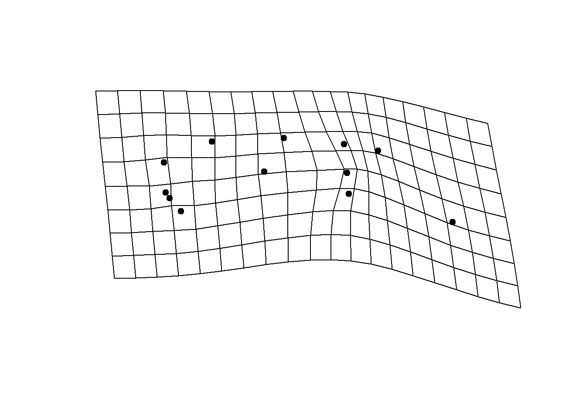
plotRefToTarget(lmks$consensus, pred$alloJord, mag=2)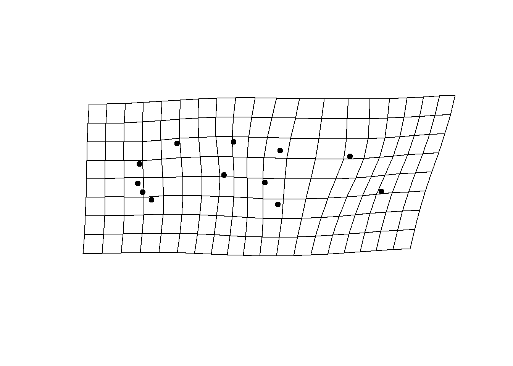